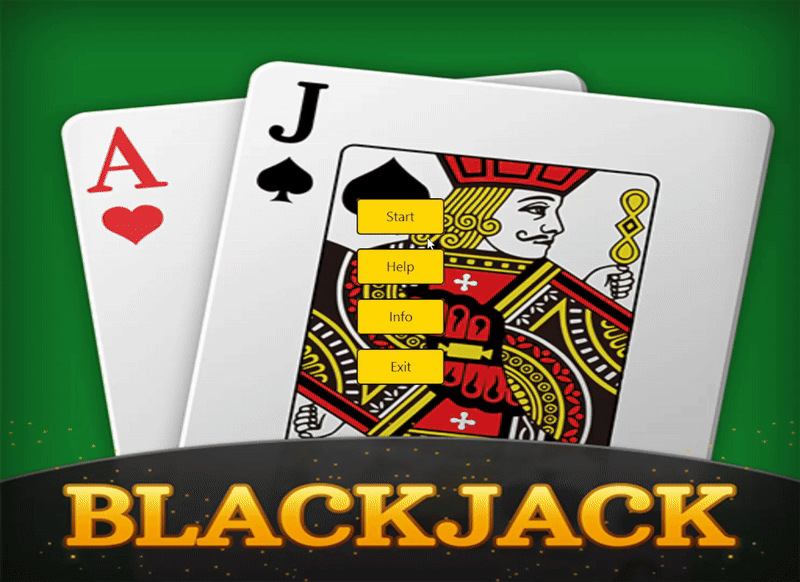

Tegemist on meie 1. projekti edasiarendusega, terminali blackjack mäng. Eelkõige on juurde lisatud graafiline liides. Eesmärk oli luua lihtne ajaveetmise kaardimäng ja valisime selleks Blackjack’i, mis on üks tuntumaid kaardimänge. Programm on jagatud erinevatesse klassidesse mis on kirjeldatud allpool.
Programmeerimiseks kasutatud Intellij ja versioonihalduseks GitHubi. Mängu algne idee tuli Richardilt ja ülejäänud teostus on mõlemapoolne panus. Projekti käigus suhtlemiseks kasutasime eelkõige Discordi kus sai vestluseid pidada ja vajadusel ekraani/pilte jagada. Erilist etapilist jaotust projekti puhul ei loonud, sest ei olnud vajadust.
Esialgu põrgatasime erinevaid ideid ja mõtteid, mida üldse teha ja kui see paika sai, siis hakkasime asjaga pihta. Ajakulu vaatest mõlemad kulutasime umbes 10h nädalas projektile. Viimasel nädalal ülevaatamiseks ja paranduste sisseviimiseks rohkem.
Richard pani paika mängu üldise kondikava. Lauri võttis alguses ette põhiloogika ehk Mäng.java. Arendamise käigus täiendasime üksteise kirjutatud klasse ja meetoteid ning tegime parandusi eesmärgiga hoida programmi loogika ühtne ja selgesti arusaadav.
Projekt 2 osas graafilise osa kujunduse ja kondikava mõtles välja Lauri ja alguses edasised arendused lisas Richard. Kahe peale katsetades erinevaid variante leidsime, et mõistlikum on teha minimalistlik ja kergesti arusaadav mäng. Ajaliselt kulutasime veidi vähem aega kui projekt 1 puhul. Tööjaotus loogika oli sarnane.
Üldiselt muresid ja probleeme ei esinenud, koostöö sujus ka selle projekti puhul rahulikus tempos. Koodi osas esialgu pisike seisak oli sellest, et aru saada millest siis täpselt alustada ja kuidas eelmine projekt ühildada graafilise versiooniga. Teiseks mureks oli võitjate info õigesti kuvamine, mis oli sarnane mure esimese projekti puhul.
Kirjutatud kood on üsna loetav ja jaotatud loogiliselt klassidesse ning järgib blackjack’i üldiseid reegleid. Mäng on mängitav ja teeb ajaveetmise veidi lõbusamaks. Edasised arengud võiksid olla seotud graafilise osa täiendamisega, result tabeli kuvamisega ja loogika viimistlemisega. Ainuke asi milles kahtleme on see, et G_main.java on nii suur aga n.ö globaalsete klassiobjektide edasiandmine oleks natuke segane
Programm küsib kasutajalt sisendeid (raadio ja tavanupud ning text fields) valikute tegemiseks. Mängus saab määrata kui palju kaardipakke kasutatakse.
Praeguses versioonis saab mängida kuni 5 mängijat ühe diileri vastu. Mängijate seast saab määrata roboteid.
Programmeerimise käigus lõime vastavad klassid osade kaupa, et testida klassi toimivust. Hiljem testisime põhjalikult, mängides seda mitu korda läbi erinevate kaardipakkide, mängijate ja robotite arvuga, et veenduda, et kõik töötab korralikult ja ilma vigadeta. Testimise lihtsuseks saab määrata kõiki mängijad robotiteks.
Näidisringi läbiviimiseks kuvatakse mängija ja diileri kaarte ja näidatakse lõpuks, kes vooru võitis ja miks.

Peale mängi alustamist kuvatakse kõikide mängijate kaardid ning diilerile jagatud esimene kaart, diileri teine kaart on peidetud.
Mängija valikud:Mängija saab kaarte võtta kuni 21 punktini või kuni ta läheb üle 21 punkti ("lõhki"). Mille korral antakse käik edasi. Peale seda kui kõik mängijad on ära käinud käib diiler
Diileri käik:Kui mängija pole veel "lõhki" läinud, hakkab diiler võtma kuni tema punktisumma on vähemalt 17
Terminali versiooni loogika põhiklass mis juhib mängu kulgu, mängijate lisamist jms.
Haldab kaardipaki loomist, segamist ning kaartide jagamist. Sisaldab loogikat tagamaks, et jagatud kaardid ei korduks. Konstruktor loob kaartide massiivi vastavalt sellele mitu pakki on mängus.
abstraktne klass
Esindab mängija või diileri käes olevaid kaarte. Võimaldab kaarte lisada ning arvutab automaatselt kaartide punktisumma, et lihtsustada tulemuse kontrollimist.
Üksiku mängukaarti kuvamine, mis sisaldab kaardi väärtust ja masti. Võimaldab kuvada kasutajale kaardi arusaadaval kujul.
laiendab Käsi.java
Mängijat esindav klass. Hoiab infot selle kohta, millised kaardid on mängija käes ning võimaldab mängijal teha valikuid, kas võtta veel üks kaart (hit) või jääda olemasoleva käega seisma (stand). Klass sisaldab roboti käitumist
laiendab Käsi.java
Lihtsustatud AI, mis järgib diileri reegleid (võtab kaarte kuni punkte on 17)
Sisaldab robotite loogikat (lihtne ja keeruline raskusaste) ning kaartide tõenäosuste arvutamine.
Graafilise osa peaklass. Mängu loogika põhiklass mis juhib mängu kulgu, nuppude callback funktsioone ja hoiab graafika objekte.
laiendab javafx.scene.layout.StackPane.java
laiendab G_Kaart.java
Esindab mängija või diileri käes olevaid kaarte. Võimaldab kaarte lisada ning arvutab automaatselt kaartide punktisumma, et lihtsustada tulemuse kontrollimist.
mõeldud andmete talletamiseks (nimi ja kas tegemist on robotiga).
Mõeldud JavaFX CSS laadimiseks. See klass võtab teatud faili asjad styles.css failis ja annab nendele klassidele, kellel seda vaja on. See implementeeriti, sest lihtsalt css faili paigaldamine tervele projektile kirjutab üle javaFX vaike css.
Ilma konstruktoriteta klass, mis laseb robotil käituda nagu mängija. Graafilise versiooni robot kasutab ainult Strateegia::tõenäosusBust, Roboti lihtsam AI ei ole graafilses versioonis implementeeritud, sest me ei leidnud, et seda on vaja. Roboti imiteerib mängijat ning kasutab samasid callback funktsioone mis nuppud mängija jaoks.